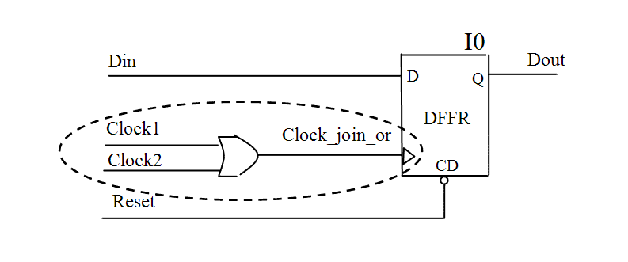

| Description | This rule fires if Leda finds a joined clock that is not generated by an OR gate in the design. OR gates are recommended for gated clocks because they derive the smallest pulse width compared to clocks generated by other types of gates. |
| Policy | DESIGN |
| Ruleset | CLOCKS |
| Language | VHDL/Verilog |
| Type | Hardware |
| Severity | Error |
This is an example of valid Verilog code, followed by a circuit diagram that illustrates the correct approach:
module ntl_clk20_top (Clock1, Clock2, Reset, Din, Dout ); // Clock1, Clock2 are clock signals input Clock1, Clock2, Reset, Din; output Dout; reg Dout; wire Clock_join_or; assign Clock_join_or = Clock2 | Clock1; // OK -- OR gate for joined clock ... endmodule